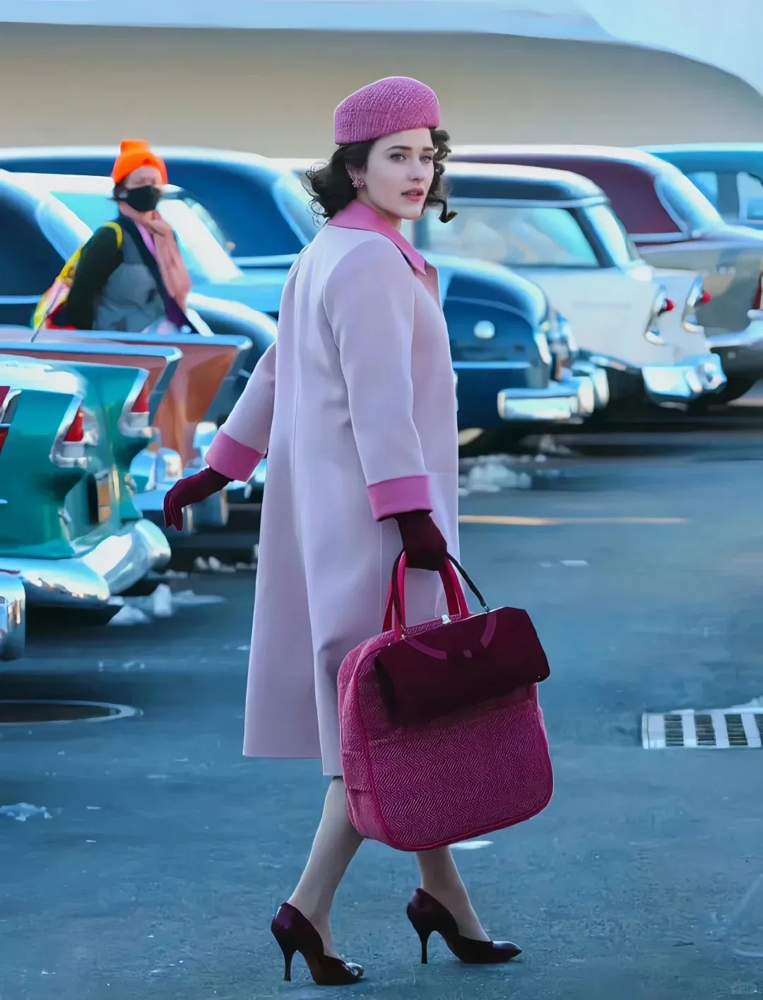

出彩之处
清新色调与考究镜头
该剧主色调清新明快，单机拍摄让光影和镜头极为考究，众多长镜头令人印象深刻。如米琪走进公寓的场景，短短几秒钟，她的美貌、利索与周到便跃然屏幕之上。
巴黎时尚与艺术之美
第二季中，巴黎被展现得诗意浪漫。作为时尚之都，街头女郎时髦，连普通大妈都能精准说出服装色号。巴黎充满人情味和怀旧气息，女主妈妈在巴黎找回了年轻时光。
女性意识觉醒

女主米琪从失婚妇女到女喜剧演员的转变，是女性意识觉醒的典范。第一季中，她遭丈夫背叛后，开始重新审视人生，不再以丈夫为中心，勇敢追求自我价值。
大尺度情节与真实感

剧中大尺度情节虽有争议，却增加了笑料和真实感。在保守时代，米琪的大胆表现打破传统观念，谈论敏感话题，表达真实感受，展现女性反抗精神。
女主的性格魅力
Midge 美丽且由内而外散发气质，对美执着追求。她内生积极性和永不言败的高能量，面对困难勇敢坚持，成为时代先锋。